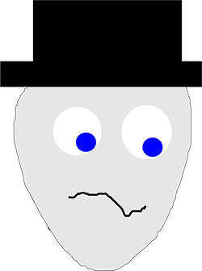
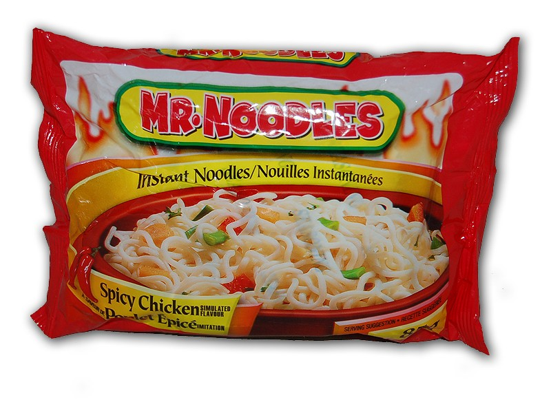

I'm Mr Noodle, the imaginary student used in the intro lab notes because I have a name that's conveniently got eight letters and starts with an 'm' like other University of Manchester users.
Here's a picture of me:
Please don't confuse me with Mr Noodles noodles, as shown in the picture below. These are real noodles, where as I'm an imaginary character and these things aren't the same at all. Other forms of instant noodles are available. 